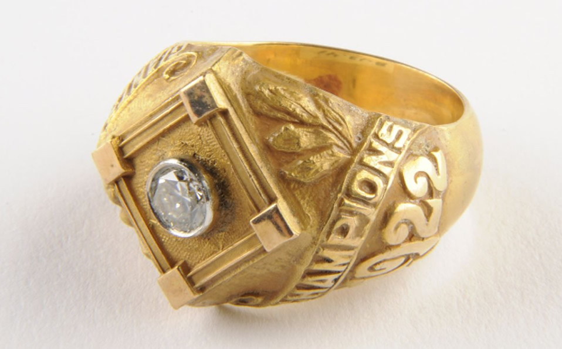

Trofeo del Comisionado
Cada octubre, el mundo de los deportes se pone de fiesta con la Serie Mundial, el compromiso por el título de las Grandes Ligas de Béisbol (MLB) de Estados Unidos que enfrenta a los equipos campeones de la Liga Americana y la Liga Nacional que entrega el famoso Trofeo del Comisionado.
Los jugadores de la equipo vencedor reciben el famoso "Anillo de Campeonato de Serie Mundial" y también el Trofeo del Comisionado, del cual te contaremos algunos datos curiosos a continuación.
- La primera vez que el Trofeo del Comisionado se entregó fue en la temporada de 1967 cuando St. Louis Cardinals derrotó a Boston Red Sox en 7 juegos del Clásico de Otoño.
- A diferencia de otras ligas deportivas en las que un solo trofeo se va pasando de ganador en ganador cada año, un nuevo Trofeo del Comisionado es elaborado anualmente para el ganador de Serie Mundial, incluso si el equipo llega a ser bicampeón. El trofeo está elaborado con plata y pesa al rededor de 14 kilos. Tiene uno de los diseños más originales para galardones deportivos al contar 30 banderas doradas que representan a las franquicias de MLB.
- El trofeo está elaborado con plata y pesa al rededor de 14 kilos. Tiene uno de los diseños más originales para galardones deportivos al contar 30 banderas doradas que representan a las franquicias de MLB.
- Las banderas se elevan a partir de una bola plateada de béisbol, que a su vez representa al mundo. La base tiene una copia de la firma del comisionado.
- Desde 1999, la exclusiva empresa de joyería Tiffany & Co es la encargada de la elaboración del Trofeo del Comisionado.
- New York Yankees es la franquicia con más Trofeos del Comisionado en sus vitrinas, pues 7 de sus 27 campeonatos los han conquistado desde que se entrega dicha pieza.
Bravos de Atlanta
Te podría interesar.
Serie Mundial 2021
Edición N°117

La Serie Mundial de la Temporada 2021 de las Grandes Ligas de Béisbol, fue la 117ª edición de este clásico, se disputó desde el 26 de octubre de 2021 al 2 de noviembre de 2021, entre el campeón de la Liga Americana, Houston Astros y el campeón de la Liga Nacional, Atlanta Braves Mientras que para los Astros significó su tercera serie mundial en cinco temporadas, para los de Atlanta significó su regreso a esta serie tras 22 años de ausencia, su última serie había sido en 1999 donde fueron barridos en 4 juegos por los New York Yankees.
El equipo con el mejor porcentaje de victorias en la temporada regular tuvo la ventaja de local en la serie, albergando así el primer, segundo y el sexto juego
Anillo de Campeonato
Hoy es ya una tradición o quizá hasta una obligación que el equipo campeón de la Serie Mundial mande a hacer anillos conmemorativos para sus jugadores y todo el staff que forma parte de la organización, como parte de la celebración por haber obtenido el título, pero ¿cuándo se dio por primera vez esto?
El equipo recibe el trofeo como recompensa por ser campeón, y aunque se hacen réplicas para los jugadores, este objeto es de la franquicia y permanece en las instalaciones del equipo, por lo que para hacer extensivo el reconocimiento a los peloteros, coaches y todo el personal que forma parte del club, se les da su propio premio, uno que pueden mantenerlo de por vida y además, llevarlo a todos lados.
Como Dato Curioso!!!
Los New York Giants en la temporada de 1922, se convirtieron en el primer equipo en la historia que le dio anillos de campeón a sus peloteros, esto después de que ganaron por barrida la Serie Mundial frente a los New York Yankees. Curiosamente, los propios Yankees fueron los siguientes que le dieron un anillo a sus peloteros, cuando levantaron el título en 1927.
- Se han encontrado algunos anillos de campeón previo a los de 1922 pero se cree que esos ejemplares fueron hechos de manera individual por los peloteros o dueños y no como parte de un premio para todo el equipo.
- Las compañías que se han encargado de hacer los anillos son Jostens, Tiffany & Co., Dieges & Clust, and L.G. Balfour Company.
- A partir de la temporada 1932 se hizo una tradición la entrega de los anillos a los jugadores.
- Aun así, en varias épocas los peloteros o miembros del staff han pedido cambiar sus anillos por otros objetos.
- Estos premios se han convertido también en parte de la memorabilia del beisbol, y eso ha llevado a subastar algunos de ellos, pagando hasta 180 mil dólares por un anillo. Eso fue en 2007, cuando se pagó esa cantidad por la joya que Casey Stengel ganó en 1951 con los Yankees.
- Cada equipo decide la cantidad de anillos que mandan producir y a quien se los entregan. Algunos además de jugadores, staff de coacheo, dueños y directiva, le han dado al staff del clubhouse y a los encargados del mantenimiento del campo. 